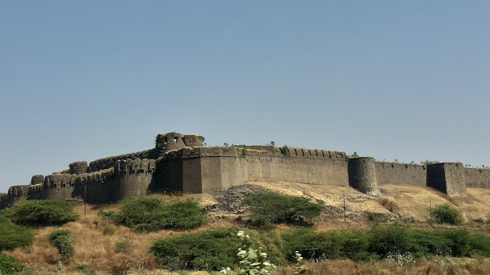
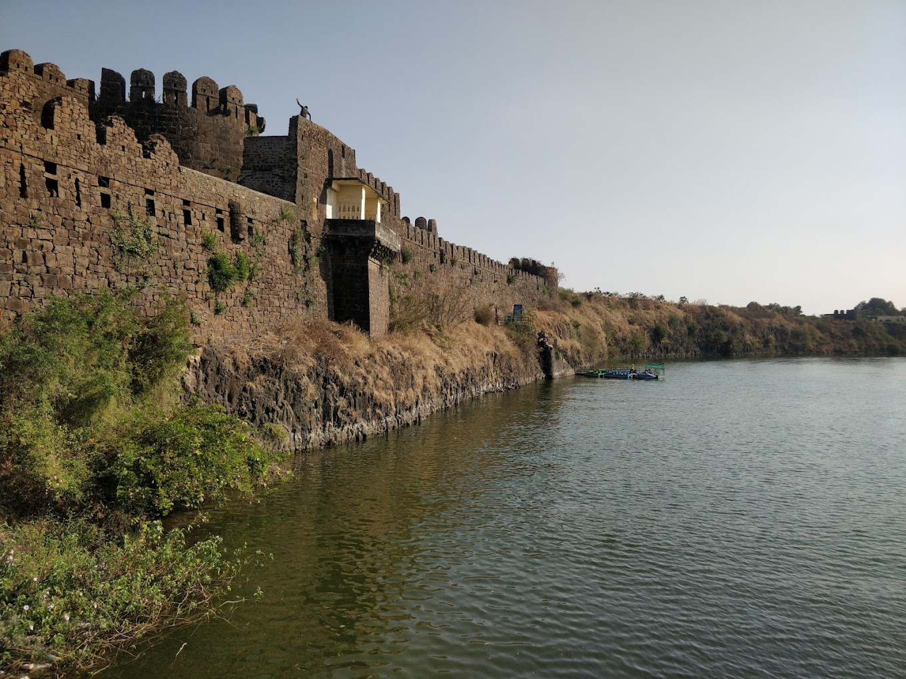
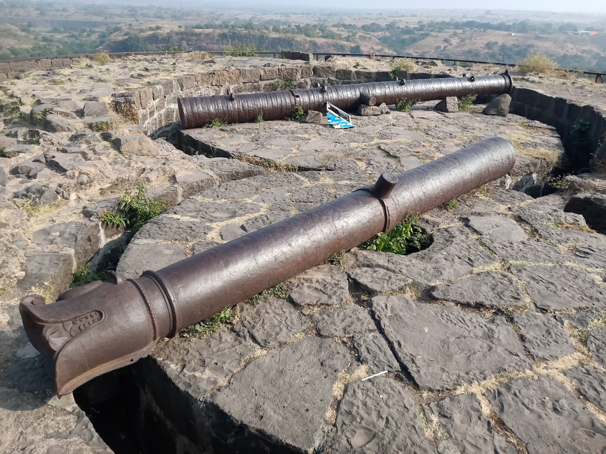
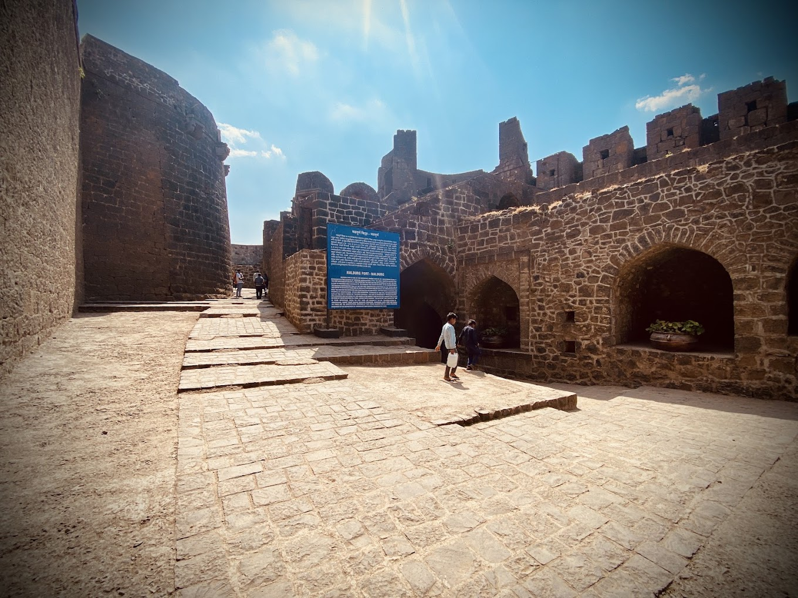

नळदुर्ग किल्ला
Location : Click Here For Google Map
- माहिती
- नळदुर्ग किल्ला हा महाराष्ट्रातील बीड जिल्ह्यात स्थित एक ऐतिहासिक किल्ला आहे. नळदुर्ग किल्ला आपल्या अद्वितीय स्थापत्यशास्त्र आणि सामरिक महत्त्वामुळे प्रसिद्ध आहे. हा किल्ला प्राचीन काळातील आणि विशेषत: मुस्लिम शासकांच्या काळातील महत्त्वपूर्ण किल्ल्यांपैकी एक मानला जातो.
नळदुर्ग किल्ल्याची रचना प्राचीन काळात झालेली असून, त्याची वास्तुकला आणि संरचना भारतीय स्थापत्यकलेचा उत्कृष्ट नमुना आहे. किल्ला उंच डोंगरावर स्थित आहे आणि त्याच्या कड्यांवरून संपूर्ण परिसराचे दृश्य पाहता येते. किल्ल्याच्या भिंती मजबूत आणि उंच असून, त्याच्या आसपास असलेले तटबंदी त्याच्या संरक्षणाला प्रभावी बनवतात.
नळदुर्ग किल्ला बहुतेक वेळा मराठा साम्राज्य आणि मुघल साम्राज्य यांच्यातील संघर्षाचे एक महत्त्वाचे स्थान ठरला. हा किल्ला एक सामरिक दृष्टिकोनातून महत्त्वाचा होता, कारण किल्ल्याच्या स्थितीमुळे तो शत्रूच्या हल्ल्यापासून सुरक्षित राहू शकला.
किल्ल्याच्या आत, ऐतिहासिक अवशेष, वॉटर टँक, टॉवर आणि इतर संरचनांचे अवशेष दिसतात. नळदुर्ग किल्ल्याच्या शिखरावरून दृष्य एक अद्भुत अनुभव देतो, आणि किल्ल्याच्या आतील परिसरातील वाड्या आणि इतर वास्तू दाखवतात की किल्ला प्राचीन काळात कसा महत्त्वाचा ठिकाण होता.
आजकाल, नळदुर्ग किल्ला एक लोकप्रिय पर्यटक स्थळ बनला आहे. ऐतिहासिकदृष्ट्या महत्त्वपूर्ण असलेल्या या किल्ल्याला ट्रेकर्स, इतिहासप्रेमी आणि भक्त मोठ्या संख्येने भेट देतात. किल्ल्याचे ऐतिहासिक आणि स्थापत्यशास्त्रीय महत्त्व त्याला एक खास स्थान देतात.
Explore the historical beauty



